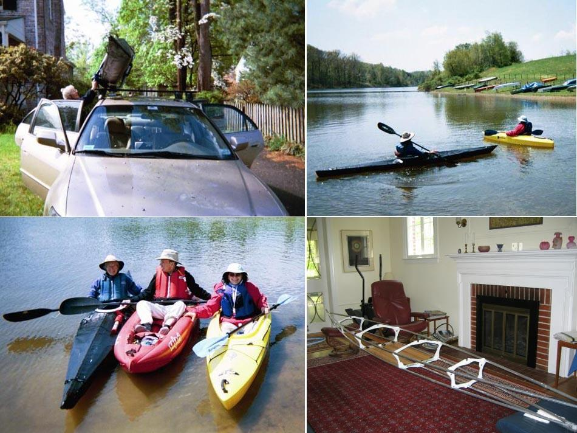

| (New) Sea Tour 13 by Kathy Smith (US) | Menu Last Page Next Page |
|
 Kathy Smith of Washington D.C. has just completed her new Sea Tour 13 (396 X 56cm). Her initial paddling impressions are as follows....... "We tried out the Sea Tour today and it handled beautifully. I was so pleased at the way it tracked. It was very easy to maneuver. It was also quite comfortable and really fast." |
|